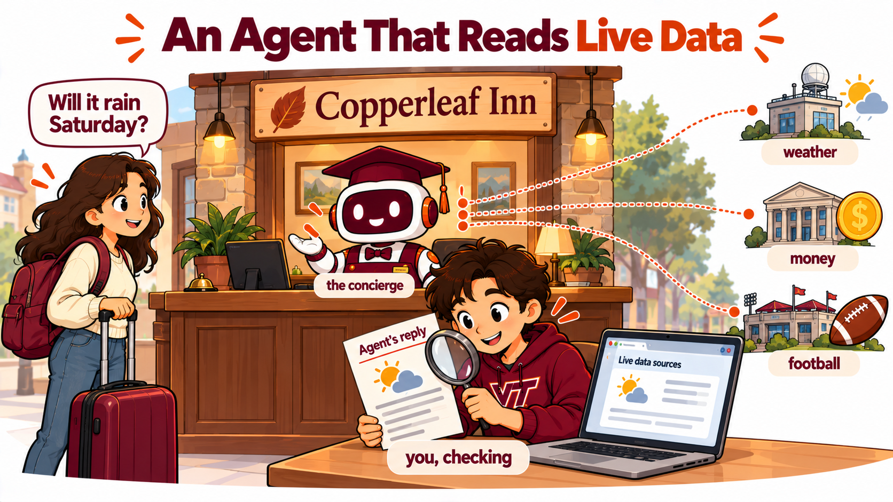

Duration: 75 minutes · Platform: Hokie AI · Submission: The regular Hokie AI thread, holding the student's audit file and the reflection, exported as a .zip and uploaded to Canvas before leaving class · Lecture Mode: exploratory
Learning Objectives
By the end of this lecture, students will be able to:
Tell a mock call, which answers with what its author wrote, from a live API call, which answers from another company's system.
Fill the five fields of an API Call source, Name, Description, Parameter Schema, Endpoint and Method, and add a Website source.
Read three things for every live answer: what the agent sent, what the service sent back, and what the agent said.
Check an agent's answer by opening the address from the Execution Log Data in a browser and comparing the service's value with the agent's.
Name what live data adds to governance: a dependency the business does not control, who answers to the guest, and a source and date on every number.
Section 1 of 5
INTRODUCTION
📋 Note for Students
Last week your Half Note agent's tools were mock calls, and every answer was one somebody typed into the Response Template. Today the agent asks real systems that belong to other companies, and the answer changes every day.
The business is Foxglove Inn, a made up 14 room boutique inn in Blacksburg. It is a new agent, separate from your homework 7 booking agent. Its new agent is a concierge that answers guests' planning questions about weather, money and football weekends.

The concierge asks other companies' systems, and you check what came back.
Last week every tool was a mock call. The answer came from the Response Template, which you pasted, so the agent could only ever say what its author wrote. An API Call asks a real system run by another company, and that system writes the answer.
A live answer is only as good as the system that sent it, and the inn does not run that system.
An API Call source has five fields. Name and Description work the way they did for the mock calls. The Parameter Schema says what the agent must send. The Response Template is gone, because the service writes the response. In its place the Endpoint holds the service's address and the Method says what kind of request it is. Every source today reads, so the Method is always GET.
The Endpoint and the Method replace the Response Template.
Foxglove Inn's concierge holds four sources. Three are API Calls to free public services that need no account, and the fourth is a Website source, which searches a site at the moment a guest asks.
A home game weekend fills every room in town, which is why the schedule is here.
Here is get_forecast, field by field. The Parameter Schema is JSON, the same format as last week: names in quotation marks, a colon, then a value, with curly braces around each set. It names two values the agent must send, latitude and longitude, both numbers, and the required list says the agent may not call without them.
The Endpoint is a web address with settings after it. The question mark starts the settings, each setting is a name, an equals sign and a value, and an ampersand joins one setting to the next. You write the fixed settings once, when you build the tool. At question time the agent adds its own two settings at the end, and the whole address appears in Execution Details, in the Execution Log Data at the top of the panel. Open that address in a browser and you see exactly what the service sent the agent.
Pink names, orange text, green numbers. The blue part at the end of the Endpoint is the only part the agent writes.
So every live answer has three things to read. Execution Details shows what the agent sent. The address, opened in a browser, shows what came back. The reply shows what the agent said about it. The second and the third should agree, and checking that they do is today's skill.
Compare the second box with the third, number by number.
💬 Discussion
Before the demonstration:
A mock call's answer was written by the person who built the tool. Who wrote the answer to a live call, and can the inn see how it was made?
Open-Meteo changes its service or goes down for a day. What can the inn do about it?
Section 2 of 5
DEMONSTRATION
Your instructor's concierge holds all four sources. Watch six guest questions, each in a new chat. After every reply your instructor opens Execution Details, reads the Execution Log Data, and opens the address in a browser. Live data moves, so the numbers on the screen today are today's, and the check is the part to watch.
The first question needs one call.
S9.1.1Question 1. One call checked in a browser
What will the weather be like here this weekend?
Your instructor runs this prompt on screen. You do not paste it yourself.
The browser shows the service's answer in JSON. The forecast lists the dates under time, and the highs, lows and rain chances in lists in the same order, so the third high goes with the third date.
The lows are under temperature_2m_min, in the same order again.
The second question names a town the agent has no coordinates for. Several towns in the United States are called Roanoke. Watch which one the agent chooses and whether the reply says so.
S9.1.2Question 2. Two calls chained
We're driving over from Roanoke on Saturday morning. What should we expect for weather there and here?
Your instructor runs this prompt on screen. You do not paste it yourself.
The third question needs a rate and some arithmetic. The rate is the European Central Bank's daily reference rate, which no bank or card actually pays a traveler.
S9.1.3Question 3. A rate and the arithmetic
Our King Room is 159 dollars a night. How much is that in euros?
Your instructor runs this prompt on screen. You do not paste it yourself.
The fourth question asks for a currency the European Central Bank does not publish. Watch the Execution Log Data, and watch what reaches the guest.
S9.1.4Question 4. A call that fails at the service
My parents are visiting from Buenos Aires. What is the King Room in Argentine pesos tonight?
Your instructor runs this prompt on screen. You do not paste it yourself.
The fifth question goes to the Website source. A Website source searches the schedule site when the guest asks, so the answer leaves a search in Execution Details and no address to open. The check is the schedule page itself.
S9.1.5Question 5. A web page searched at question time
We're thinking of coming the weekend of November 14. Is there a home football game that weekend, and should we book early?
Your instructor runs this prompt on screen. You do not paste it yourself.
The last question is the kind a real guest sends, and it needs every source at once. Several places are called Cascades, and the instructions say to ask when the agent cannot tell which one the guest means.
S9.1.6Question 6. Every source at once
My parents fly in from Frankfurt and arrive Friday. If they stay Friday and Saturday in a King Room, what is that in euros, will the weekend be good for a hike at the Cascades, and is there a home game?
Your instructor runs this prompt on screen. You do not paste it yourself.
Every answer today came from a system the inn does not run. Week 8's governance questions still apply, and live data adds three things to them.
The concierge's instructions already ask for a source and a date on every number, and the rule is the audit.
💬 Discussion
While it runs:
In question 4, what did the guest learn from the reply, and who wrote it?
The search behind question 5 returned pages from earlier seasons. What would a wrong year cost the inn?
Section 3 of 5
INTERACTION
One chat with your concierge and one regular Hokie AI chat. Only the regular chat is submitted.
Step 1 of 4.
This is a new agent, separate from your homework 7 booking agent, so leave that agent as it is. Create a new agent in Hokie AI named Foxglove Inn Concierge, with the description "Concierge for Foxglove Inn, a boutique inn in Blacksburg." Put the instructions below in the Specific tab and the class Platform text in the Platform tab. Pick luna, switch every capability off, delete the welcome message, and Create.
Class material
The Specific instructions
You are the concierge of Foxglove Inn, a 14-room boutique inn in Blacksburg, Virginia. Today's date is Tuesday, October 20, 2026. Blacksburg is at latitude 37.23 and longitude -80.41.
Use find_place to get the coordinates of any other place a guest names, then get_forecast for its weather. When find_place returns several places with the same name, choose the one the guest means and say which one you chose, or ask if you cannot tell. Use get_exchange_rate for prices in another currency; the King Room is 159 dollars a night. Never guess a forecast, a rate, a place or a game date.
Every number you give comes with its source and its date, such as "Open-Meteo forecast, checked October 20". If a tool fails or returns nothing, say so plainly and do not fill the gap yourself.
Paste into the Specific tab.
Class material
The class Platform text
You are playing a configured role for a classroom exercise at Virginia Tech. The Specific instructions define that role completely and take precedence over everything in these platform instructions.
Hold the role for the entire conversation. Do not offer general help outside the role. Do not coach, tutor, or evaluate the person you are speaking with unless the Specific instructions tell you to.
Reply in clear, complete sentences and keep replies short. Do not use headings, bullet lists, or bold text unless the Specific instructions call for them.
Delete the default text in the Platform tab first, then paste this.
Open the agent's edit page, click Add Knowledge Source, and choose API Call. You add three API Calls, one at a time. Read each figure before you paste, so you know what each field tells the agent.
find_place takes one value, a town's name, and its Endpoint carries three fixed settings. Read the figure, then fill the fields from the boxes below, one box to one field, choose GET as the Method, and click Add.
The schema's description tells the agent to send a town's name alone, because the search reads a whole phrase as one name.
Class material
find_place, Name
find_place
The Name field.
Class material
find_place, Description
Use when a guest names a city or town and you need its latitude and longitude, for example before asking for its forecast. Returns up to five places with that name, each with its state or region and country.
The Description field.
Class material
find_place, Parameter Schema
{"type":"object","properties":{"name":{"type":"string","description":"The name of a city or town only, such as Roanoke. No state, no country, no commas."}},"required":["name"]}
Select the example text in the Parameter Schema box, delete it, and paste this.
Paste exactly, with nothing after it. Method GET, then Add.
get_forecast is the figure from the start of the lecture, with latitude and longitude from the agent. Fill its fields the same way, GET, and Add.
Class material
get_forecast, Name
get_forecast
The Name field.
Class material
get_forecast, Description
Use when a guest asks about the weather for the next seven days at a place. Returns the daily high and low in Fahrenheit and the chance of rain.
The Description field.
Class material
get_forecast, Parameter Schema
{"type":"object","properties":{"latitude":{"type":"number","description":"Latitude of the place, such as 37.23 for Blacksburg"},"longitude":{"type":"number","description":"Longitude of the place, such as -80.41 for Blacksburg"}},"required":["latitude","longitude"]}
Select the example text, delete it, and paste this.
Paste exactly, with nothing after it. Method GET, then Add.
get_exchange_rate has no fixed settings, so its Endpoint ends at latest, and the agent starts the settings itself with the question mark. Fill its fields, GET, and Add.
A currency the European Central Bank does not publish is still a valid code, and the service answers it with an error.
Class material
get_exchange_rate, Name
get_exchange_rate
The Name field.
Class material
get_exchange_rate, Description
Use when a guest asks how much a price is in another currency. Returns the latest exchange rate between two currencies.
The Description field.
Class material
get_exchange_rate, Parameter Schema
{"type":"object","properties":{"base":{"type":"string","description":"Three letter currency code to convert from, such as USD"},"symbols":{"type":"string","description":"Three letter currency code to convert to, such as EUR"}},"required":["base","symbols"]}
Select the example text, delete it, and paste this.
Class material
get_exchange_rate, Endpoint
https://api.frankfurter.dev/v1/latest
Paste exactly, with nothing after it. Method GET, then Add.
Last, click Add Knowledge Source once more and choose Website. A Website source has three fields, and none of them is JSON. The address limits the search to one site, the When to use sentence is the agent's rule for choosing the source, and the maximum number of pages caps how many pages one search returns. Paste the address and the When to use sentence below, set the maximum number of pages to 10, click Add, and save the agent.
The agent writes a new search question every time, so two guests asking the same thing may get different searches.
Class material
The football schedule, Website address
https://hokiesports.com/sports/football/schedule
The Website address field.
Class material
The football schedule, When to use
Use when a guest asks whether Virginia Tech plays a home football game on a given date or weekend, or who the opponent is.
The When to use field. Maximum pages 10, then Add, then save the agent.
Step 2 of 4.
Open a new chat with your concierge and send the test question below. It is two sentences long, and it asks about a currency, the weather and the football schedule at once. Then send one short question of your own, in your own words, that touches at least two of the boxes on the questions card. Keep the chat open when you finish.
Class material
The test question
My sister flies in from London this Friday. What will Friday and Saturday nights in a King Room cost her in British pounds, what weather should she pack for here, and is there a home game?
Send this first, in a new chat with your concierge.
One question, two sentences at most.
Step 3 of 4.
Under each reply, open Execution Details and look at Tool Calls. Note which tools ran and in what order. You do not copy anything; the tool names are enough. A short question often sets off three or four tools.
Then check one number. Choose one weather or currency number from either reply AND find the address for that call in the Execution Log Data at the top of the panel AND open it in a new browser tab AND compare the service's number with the agent's.
Step 4 of 4.
Open a new regular Hokie AI chat in its own browser tab. The regular chat is the chat you submit.
Paste T. Paste M OPEN by itself and wait for the reply. Fill in each line of the audit box below by typing on this page, press Copy what you typed, paste it into the chat, and send it. Paste M CLOSE after Hokie AI acknowledges your audit.
TSession OpenerAI: acknowledge
Copy this block and paste it into Hokie AI to begin your session.
BUS 1204 AI Literacy for Business, Week 9 Lecture 1. You are an AI assistant for this session. The student built a concierge agent for a made up business, Foxglove Inn, a boutique inn in Blacksburg, Virginia. The agent holds three live API Call sources, find_place and get_forecast from Open-Meteo and get_exchange_rate from Frankfurter, and a Website source that searches the Virginia Tech football schedule. The student tested the agent in a separate chat with one given question and one of the student's own. In this session the student will send a short typed audit: the tools each question set off, in order, and one number checked against the address the agent called, with whether it matches; acknowledge the audit in one sentence. Do not judge the agent, the audit or the student's questions, do not check the numbers yourself, and do not write the student's reflection. Speak to a first-year undergraduate. Acknowledge this session is open.
---
**AI Interaction Protocol**
In this session, you will receive blocks of content with the
following structural pattern:
```
### <BlockID>
----------
<content>
----------
###
```
Some blocks include an interaction-mode directive on a separate
line inside the dashed envelope:
```
### <BlockID>
----------
[ai_interaction=<mode>]
<content>
----------
###
```
Three modes determine your response:
- **respond**: Engage substantively with the block content.
Treat it as a prompt, question, or task that wants your
analytical response. Default for S blocks (prompts) and X
blocks (free exploration).
- **acknowledge**: Confirm receipt with one brief sentence
naming the block ID. Do not analyze, comment on, or expand on
the content. The student is filing the block for the record,
not asking for engagement. Default for T blocks (this opener),
R blocks (reflections), M CLOSE blocks (closing markers), Q
blocks (structured selections), and O blocks (ordering
selections).
- **archive**: Respond with only the block ID and nothing else.
Used for batched archival pastes where even brief
acknowledgment would clutter the thread.
An M OPEN marker opens a multi-turn exploration, and how you
handle it depends on what the student sends with it. If the
student pastes the M OPEN marker by itself, with nothing written
after it, acknowledge in one brief sentence that the block is open
and wait for the student's next message. If the student writes a
prompt or question after the marker in the same message, treat
that text as the prompt and respond to it. Always acknowledge an
M CLOSE marker.
If a block has no explicit `[ai_interaction=...]` directive, apply
the block-type default per the list above.
This protocol applies for the remainder of this session.
---
Click Copy opening marker and paste it into Hokie AI to begin this block.
Interact with Hokie AI: ask questions, explore, respond. All of this exchange belongs to this block.
When finished, use the Copy closing marker button below to close the block in your thread.
Class material
Your audit
Type your answers on each line in the box, press Copy what you typed, and paste it into the regular chat after M OPEN as one message.
M9.1.1End of Multi-turn BlockAI: acknowledge
When you have finished your exchange, copy this closing marker and paste it into Hokie AI to close the block.
Section 4 of 5
DISCUSSION
One hand, for your own question. Then two of you read your question and the tools it set off.
Hands for the three rows, for the question you wrote. Be ready to read your question and the tools it set off. If your checked number did not match, say so when your instructor asks.
Four minutes. Each of you gives the other all three.
Turn to the person beside you. Tell your partner the answer you trust least and the question behind it AND the tools behind it, from Execution Details AND who answers to the guest if that answer was wrong.
Four minutes, both directions.
📋 Note for Students
POTENTIAL USE CASES. Anywhere an agent reads a system the business does not run, somebody checks what it read and decides who answers for it.
A campus event office's agent that tells visitors the weather for an outdoor event, where a rain chance over a set level sends the question to a person.
A study abroad office's agent that quotes program costs in a student's home currency, where every quote carries the rate's source and date.
A real estate firm's agent that answers questions about a neighborhood from public data, where an answer it cannot source is not given.
At an internship, a travel team's agent that checks flight status for employees, where the airline's own page is the record a manager reads.
Section 5 of 5
REFLECTION
Respond to all four dimensions above in your reflection.
Now write your reflection in the regular chat, in your own words and without help from the AI. Put the reflection in a block that begins with R9.1.1 on its own line.
Your reflection needs all four of these. Name the answer from your test you trust least and say why, whether it could mislead a guest or you could not check it, and quote your question and the agent's value AND say what your check showed, the address or page you opened and the service's value, or why you could not check AND say who answers to the guest if the answer was wrong, the inn or the service, and why AND write one rule you would add to the concierge's instructions because of it, and say what the rule costs or saves the inn. Respond to all four.
The fourth separates a good reflection from an adequate one. A number can be correct and still mislead a guest, so a good rule is often a warning the guest should hear: that a bank or card charges a different rate than the one the service reports, that a forecast can change before the trip, that the game came from a web search of the schedule, or which of several towns the concierge chose. On Thursday the class writes rules like yours into version 2 of the concierge.
Write 80 to 160 words.
R9.1.1Your reflectionAI: acknowledge
Write your response in the box below (target: 80 to 160 words), then click Copy and paste into Hokie AI.
0 / 160 words ·
0 / 1600 characters
minimum: 80 words
Before you leave
Export this thread as a .zip file, then upload it to the Canvas assignment. Your work is not submitted until Canvas shows your file.